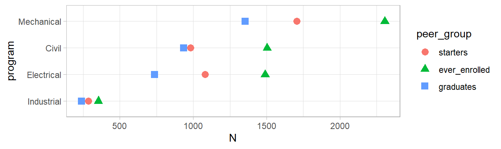

| System | Pivot "wider" | Pivot "longer" |
|---|---|---|
| colloquially called | "tall to wide" | "wide to tall" |
| Microsoft Excel | pivot | un-pivot |
| databases | pivot | anti-pivot |
| databases | crosstab | shred |
| R | unstack | stack |
| reshape, reshape2 | cast | melt |
Reshaping transforms
Using cdata, data.table, and dplyr/tidyr to transform MIDFIELD data as needed for your analysis (no base R transforms in this section).
In this section, we cover reshaping data frames by moving data between rows and columns, often called pivoting.
Terminology
Pivoting operations go by a number of different names, as listed in Table 1 (Mount & Zumel, 2019).
Pivoting is possible in base R but the package versions in data.table, tidyr, and cdata are significantly better tools. Table 2 lists the reshaping functions we use in this work.
| R package | Pivot "wider" | Pivot "longer" |
|---|---|---|
| data.table | dcast() | melt() |
| tidyr | pivot_wider() | pivot_longer() |
| cdata | pivot_to_rowrecs() | unpivot_to_blocks() |
The data set we use in this section is shown in Table 3, where “starters” is the number of students starting in an engineering program, “ever enrolled” is the number who were enrolled at least one term in the program, and “graduates” is the number graduating from that program.
| program | starters | ever_enrolled | graduates |
|---|---|---|---|
| Civil | 983 | 1504 | 936 |
| Electrical | 1080 | 1490 | 736 |
| Industrial | 285 | 353 | 238 |
| Mechanical | 1705 | 2306 | 1354 |
These data are in “wide” format, with one row per program. In this form, the “coordinates” of a measurement (a count of students) are the value of the primary key (program) and a column name.1
1 We refer again to Mount & Zumel (2019) for the concept of coordinatized data.
In Table 4, these data are transformed to “tall” format, with three rows per program. As indicated by the cell color-coding, the names of three columns in Table 3 are now values in the peer-group column in Table 4 and all counts of students are collected in the N column. In this form, the coordinates of a measurement (N) are given by the composite key (program + peer_group).
| program | peer_group | N |
|---|---|---|
| Civil | starters | 983 |
| Electrical | starters | 1080 |
| Industrial | starters | 285 |
| Mechanical | starters | 1705 |
| Civil | ever_enrolled | 1504 |
| Electrical | ever_enrolled | 1490 |
| Industrial | ever_enrolled | 353 |
| Mechanical | ever_enrolled | 2306 |
| Civil | graduates | 936 |
| Electrical | graduates | 736 |
| Industrial | graduates | 238 |
| Mechanical | graduates | 1354 |
You can see why “wide” and “tall” are commonly used to describe these two formats. Yet “wider” implies having more columns, and (while true here) that is not always the case.
What is always true is that the first format comprises row records, or one row per primary key, and the second format comprises blocks, or multiple rows per primary key (Mount & Zumel, 2021). As long as the data are properly “coordinatized”, the transformations are invertible.
In our opinion, blocks and row records describe these data formats more memorably than the alternatives, so we use them to define our transforms as well:
blocks to row-records (i.e., pivoting or “tall to wide”)
row-records to blocks (i.e., un-pivoting or “wide to tall”)
Why transform?
We transform data between blocks and row records to meet specific needs. Most data processing steps, for example, have a preferred format for how data is arranged in rows and columns. Some packages, like ggplot2, require blocks; others, like the likert package, require row records if the survey data is in summary form (frequencies counted) but requires blocks if not summarized, i.e., one row per respondent, one column per question.
Row records are generally preferred for publishing a data table such as Table 3 and they support analytical tasks as well. For example, the academic program metric “stickiness” is the ratio of the number of graduates from a program to the number ever enrolled in the program. With a data frame df organized like the Table 3 data, computing stickiness requires one line of code operating on values in the same row, e.g.,
# base R
df$stickiness <- df$graduates / df$ever_enrolledBlocks, on the other hand, are convenient for grouping and summarizing operations and, as stated earlier, are required for making charts with ggplot2. For example, with a data frame blocks organized like the Table 4 data, the three column names are variables used as arguments in the aes() function that appear in the chart on the horizontal scale (N), the vertical scale (programs), and the legend (peer groups).
library(ggplot2)
ggplot(blocks, aes(x = N,
y = program,
color = peer_group,
shape = peer_group)) +
geom_point(size = 3) +
theme_light()
Setup
Load packages.
Format data as described in the Introduction.
cohort <- fread("data/three_blocs.csv")# base R
cohort_df <- data.frame(cohort)# data.table
cohort_dt <- copy(cohort)# dplyr
cohort_tbl <- tibble(cohort)cohort_dt
#> mcid program peer_group
#> <char> <char> <char>
#> 1: MCID3111142965 Electrical starters
#> 2: MCID3111145102 Electrical starters
#> 3: MCID3111150194 Industrial starters
#> 4: MCID3111156083 Electrical starters
#> 5: MCID3111156325 Electrical starters
#> ---
#> 12966: MCID3112618553 Mechanical graduates
#> 12967: MCID3112618574 Mechanical graduates
#> 12968: MCID3112618976 Mechanical graduates
#> 12969: MCID3112619484 Electrical graduates
#> 12970: MCID3112641535 Mechanical graduatesCount by program and peer group as described in Aggregating transforms. The result is in block-records format.
key_columns <- c("program", "peer_group") # base R
freq_table <- table(cohort_df$program,
cohort_df$peer_group,
dnn = key_columns)
blocks_df <- as.data.frame(freq_table,
responseName = "N",
stringsAsFactors = FALSE)# data.table
blocks_dt <- cohort_dt[, .N, by = key_columns]
setorder(blocks_dt, program, -N)blocks_dt
#> program peer_group N
#> <char> <char> <int>
#> 1: Civil ever_enrolled 1504
#> 2: Civil starters 983
#> 3: Civil graduates 936
#> 4: Electrical ever_enrolled 1490
#> 5: Electrical starters 1080
#> 6: Electrical graduates 736
#> 7: Industrial ever_enrolled 353
#> 8: Industrial starters 285
#> 9: Industrial graduates 238
#> 10: Mechanical ever_enrolled 2306
#> 11: Mechanical starters 1705
#> 12: Mechanical graduates 1354
check_equiv_frames(blocks_df, blocks_dt)
#> [1] TRUE
check_equiv_frames(blocks_dt, blocks_tbl)
#> [1] TRUEBlocks to row-records
In this transform, we group a set of rows that go together (matching on keys) and combine them into one row by adding columns. The result is in row-records form, with one row per program.
Task. Transform the three-cohorts data frame from block-records to row-records format, using program as the primary key.
# tidyr
rowrecs_tbl <- blocks_tbl %>%
pivot_wider(id_cols = program,
names_from = peer_group,
values_from = N)# cdata
rowrecs_df <- pivot_to_rowrecs(blocks_df,
rowKeyColumns = "program",
columnToTakeKeysFrom = "peer_group",
columnToTakeValuesFrom = "N")rowrecs_dt
#> program ever_enrolled graduates starters
#> <char> <int> <int> <int>
#> 1: Civil 1504 936 983
#> 2: Electrical 1490 736 1080
#> 3: Industrial 353 238 285
#> 4: Mechanical 2306 1354 1705
check_equiv_frames(rowrecs_df, rowrecs_dt)
#> [1] TRUE
check_equiv_frames(rowrecs_dt, rowrecs_tbl)
#> [1] TRUEComments
In all cases, the same transformation occurs: column
programremains a row key column; the values of thepeer_groupcolumn (ever_enrolled,graduates,starters) become new key column names with values taken from theNcolumn.data.table.
dcast()uses a formulaLHS ~ RHStidyr
pivot_wider(), an updated approach tospread().cdata.
pivot_to_rowrecs(), a special case of the more general functionblocks_to_rowrecs().
Row-records to blocks
In this transform—the inverse of blocks to row-records—each row is disassembled and used to make a block of many rows. Each block of records in the new data frame has as many rows per record as there are columns we take measurements from.
Task. Transform the results from the previous example from row-records to block-records format, using program as the primary key and all other column names collected under a new secondary key column peer_group.
# tidyr
blocks_tbl <- rowrecs_tbl %>%
pivot_longer(
cols = c("ever_enrolled", "graduates", "starters"),
names_to = "peer_group",
values_to = "N"
)# cdata
blocks_df <- unpivot_to_blocks(
rowrecs_df,
columnsToTakeFrom = c("ever_enrolled", "graduates", "starters"),
nameForNewKeyColumn = "peer_group",
nameForNewValueColumn = "N"
)blocks_dt_2
#> program peer_group N
#> <char> <char> <int>
#> 1: Civil ever_enrolled 1504
#> 2: Civil graduates 936
#> 3: Civil starters 983
#> 4: Electrical ever_enrolled 1490
#> 5: Electrical graduates 736
#> 6: Electrical starters 1080
#> 7: Industrial ever_enrolled 353
#> 8: Industrial graduates 238
#> 9: Industrial starters 285
#> 10: Mechanical ever_enrolled 2306
#> 11: Mechanical graduates 1354
#> 12: Mechanical starters 1705
check_equiv_frames(blocks_df, blocks_dt_2)
#> [1] TRUE
check_equiv_frames(blocks_dt_2, blocks_tbl)
#> [1] TRUEComments
In all cases, the same transformation occurs: column names are identified (
ever_enrolled,graduates,starters) and collected in a new key column (peer_group); the values from these columns are collected in a new payload column (N); and column names not selected (program) are treated as keys, copied to each record row in the result.data.table
melt()tidyr
pivot_longer(), an updated approach togather()cdata
unpivot_to_blocks()a special case of the more general functionrowrecs_to_blocks().
Confirm that the result is equivalent to the original blocks form.
check_equiv_frames(blocks_dt, blocks_dt_2)
#> [1] TRUEMIDFIELD data keys
The previous sections have focused our attention on the importance of keys, that is, variables that alone or in combination uniquely identify a row of data. Here we use wrapr::checkColsFormUniqueKeys() to check if rows of data are uniquely addressable by the columns named. For example, for the Table 3 data in row records form, program is such a key:
checkColsFormUniqueKeys(rowrecs_dt, c("program"))
#> [1] TRUEFor the Table 4 data in blocks form, two columns are required:
checkColsFormUniqueKeys(blocks_dt, c("program", "peer_group"))
#> [1] TRUEFor the midfielddata practice data, the keys are:
data(student)
checkColsFormUniqueKeys(student, c("mcid"))
#> [1] TRUE
data(term)
checkColsFormUniqueKeys(term, c("mcid", "term"))
#> [1] TRUE
data(course)
checkColsFormUniqueKeys(course, c("mcid", "term_course", "abbrev", "number"))
#> [1] TRUE
data(degree)
checkColsFormUniqueKeys(degree, c("mcid", "degree"))
#> [1] TRUENext steps
Reshaping transforms can also be applied to more than one column, though we don’t cover that use case here. For those interested:
data.table’s
dcast()allows more complicated transforms, such as casting to multiple variables and aggregations at the same time.cdata has simple methods for conversions of many columns at once using
blocks_to_rowrecs()androwrecs_to_blocs()plus a “control table”. See, for example, Faceted graphs with cdata and ggplot2tidyr has similar functions, inspired by cdata, using
pivot_longer_spec()andpivot_wider_spec(). See Pivot data from long to wide using a spec.
References
Mount, J., & Zumel, N. (2019). Coordinatized data: A fluid data specification. Win Vector LLC. http://winvector.github.io/FluidData/RowsAndColumns.html
Mount, J., & Zumel, N. (2021). Block records and row records. Win Vector LLC. https://winvector.github.io/cdata/articles/blocksrecs.html